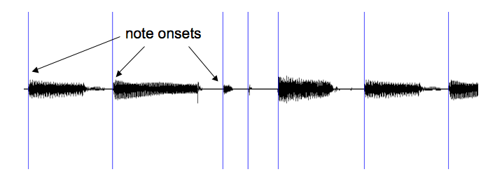
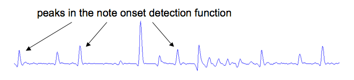
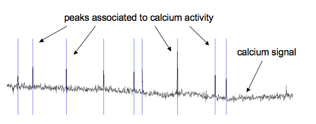
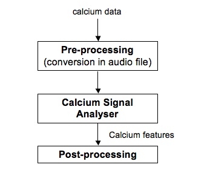
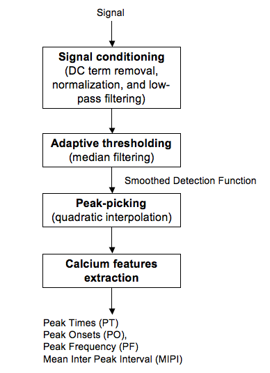
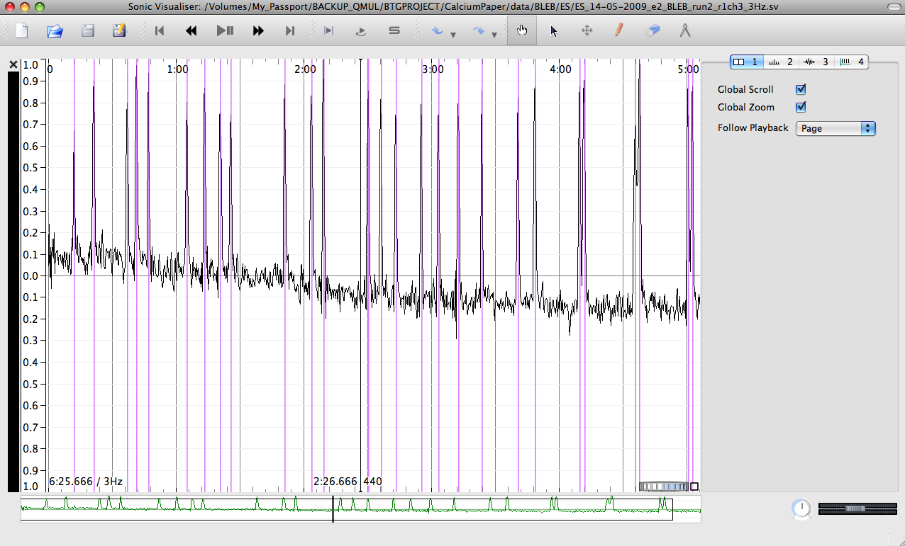
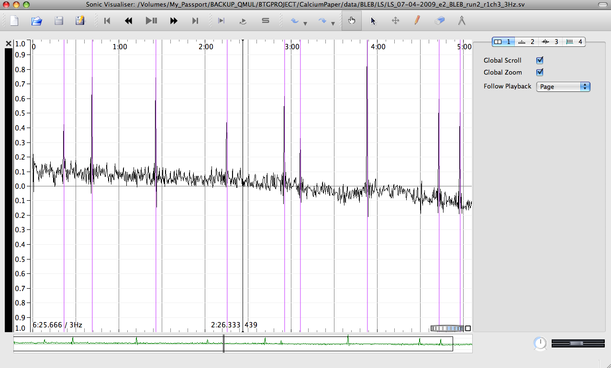

- Log in to post comments
The Calcium Signal Analyser is a plugin for feature extraction from calcium data measured in zebrafish (tropical freshwater fish) living embryos.
It is based on signal processing techniques developed to analyze music signals [Bello, 2005]. It uses the Vamp plugin format suitable for use in programs such as Sonic Visualiser and Sonic Annotator.
From music to calcium signals...
One might wonder what the relationship is between music signal processing and biological signals. The answer is illustrated by the example below.
The musical notes of the following guitar sequence have been segmented according to their onsets (start times).

This has been done by using the note onset detector from the "Queen Mary Vamp plugin set" which computes a detection function presenting peaks at the notes’ onset times (see figure below). The note onset times are then found by detecting the peaks in the detection function.

In calcium signals measured in zebrafish muscular embryo cells, detecting the calcium activity is a similar peak-picking problem:

General methodology
The calcium data have first to be converted into audio files to be processed with Sonic Visualiser or Sonic Annotator. This process can be performed with the stand-alone application csv2wav.

The Calcium Signal Analyser then extracts a set of features characterizing the calcium activity (peak times, peak onsets, peak frequency, mean inter peak interval). The overview of the system is given in the following figure:

Exporting the results for further analyses
The various features characterizing the calcium activity can be exported into various data formats (e.g., Comma-Separated Value text files) using Sonic Visualiser. The exported data can then be post-processed for further analyses (using e.g. Open Office, Excel, Matlab).
Screenshots
Here are two screenshots showing the peak detection results obtained using the Calcium Signal Analyser in Sonic Visualiser.
Early developmental stage:

Late developmental stage:

We showed that the frequency of the calcium signal activity was affected by the developmental stage of the embryo. The peak frequency in early developmental stages (21.5-23.5 hours post fertilization, hpf) is significantly higher than the one in late stages (29-31 hpf).
Sonification of calcium signals
The use of the auditory system to analyse biological signals might give clues to help us detect specific events or patterns in the signal. Note that data sonification is commonly used by some marine officers (so-called “golden ears") who are trained to detect external noises of a biological or human nature from sonar measurements.
As an example of such processing, we sonified some of the calcium signals by associating a sound to each detected peak in calcium activity.
In the attached sound examples (accelerated 16 times), a clave sound (percussive instrument made of wood, often used in salsa music) was triggered each time a calcium peak was detected.
Zebrafish quiz !
Which sound corresponds to the early developmental stage and which one corresponds to the late developmental stage?
Bonus: the music of zebrafish!
By mapping biological events to sounds in a relevant way, musical sequences can be generated. Whether such a process produces meaningful and expressive music remains controversial, but it may lead to artistic results.
We generated some musical sequences by associating the peaks of calcium activity with kalimba (thumb piano) sounds whose pitches were picked randomly across time. Have you ever heard a zebrafish "playing" the kalimba before?
Credits
The Calcium Signal Analyser has been developed thanks to a QMUL Bridging the Gaps multidisciplinary project between the School of Electronic Engineering and Computer Science (Dr Katy Noland, Dr Mathieu Barthet, Dr William Marsh) and the School of Biological and Chemical Sciences (Dr Rachel Ashworth).
References
[Bello, 2005] J.P. Bello, L. Daudet, S. Abdallah, C. Duxbury, M. Davies, and M. Sandler, A Tutorial on Onset Detection in Music Signals, IEEE Transactions on Speech and Audio Processing, 2005
[Barthet, 2010] M. Barthet, K. Noland, M. Lahne, W. Marsh, and R. Ashworth, Digital signal processing tools to analyse calcium activity in vivo, EU Workshop on Zebrafish Neurophysiology and Behavior, Queen Mary University of London, 2010